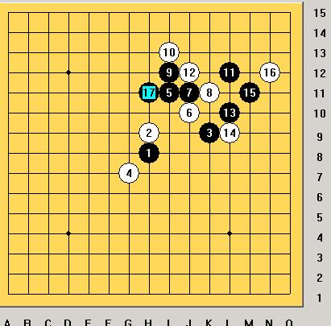
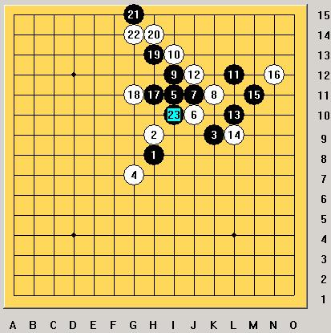
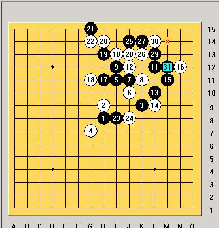
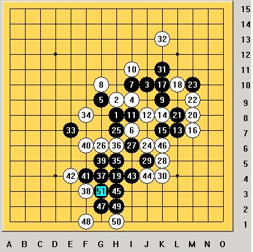

大残月实战 黑棋乱中取胜
首页
妖刀天下
#1 大残月实战 黑棋乱中取胜 作者：wrwak 发表时间：2009-1-9 11:41:05

16手错误 17手好棋
#2 Re:大残月实战 黑棋乱中取胜 作者：wrwak 发表时间：2009-1-9 11:47:20

这个23必胜 实战另外23非必胜有唯一防

#3 Re:大残月实战 黑棋乱中取胜 作者：wrwak 发表时间：2009-1-9 11:54:37
貌似16也没错 挡反也有胜
#4 Re:大残月实战 黑棋乱中取胜 作者：wrwak 发表时间：2009-1-9 12:08:21
疏星 33乱中取胜